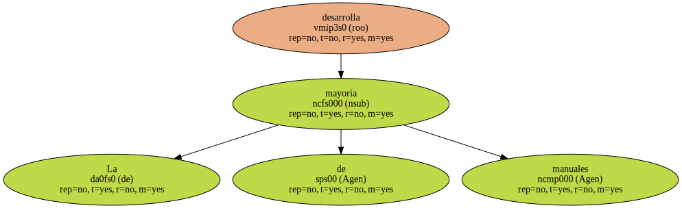
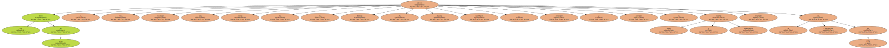
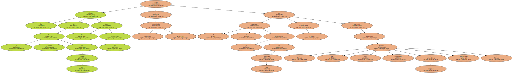
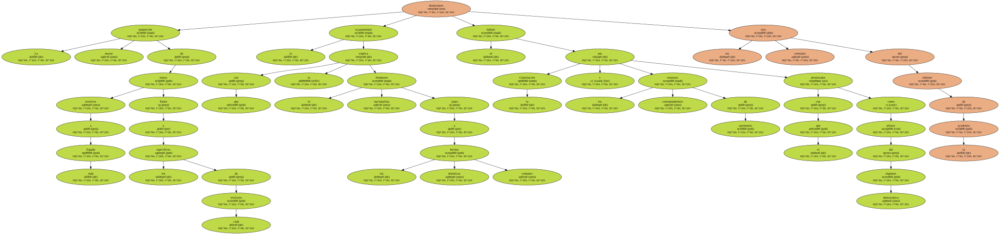
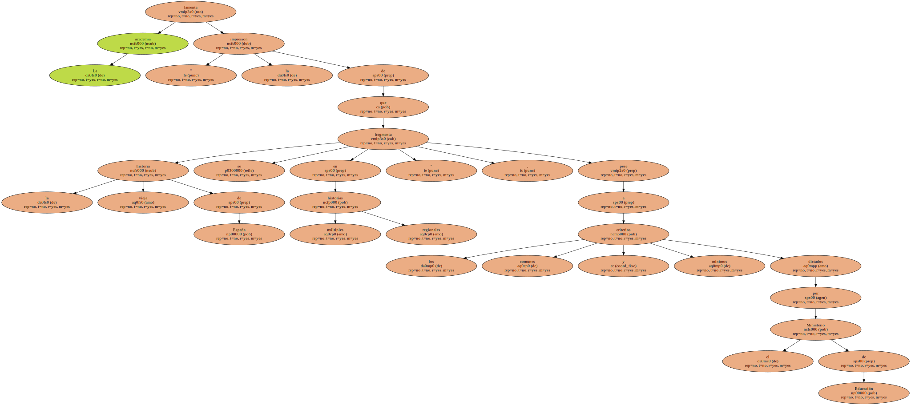
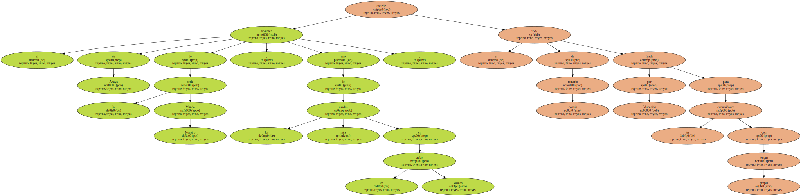
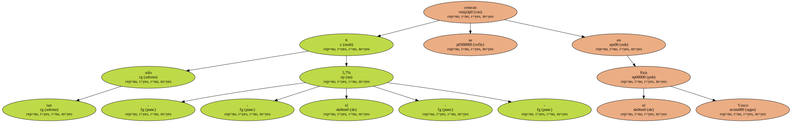
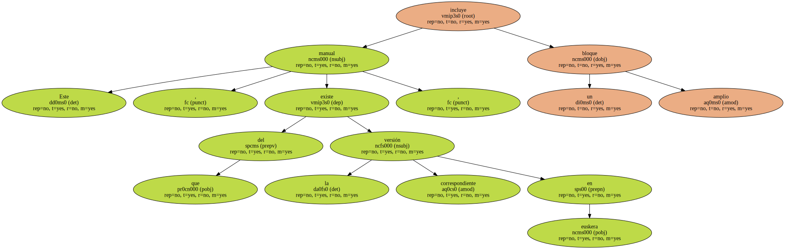
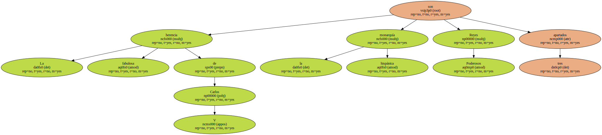
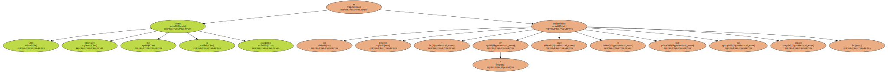

la Real Academia de la Historia se equivocó al asegurar que las comunidades autónomas tergiversan el pasado y silencian el concepto de.
La mayoría de manuales desarrolla el pasado.
Los libros de texto ofrecen a los escolares una visión de la historia de España equilibrada , universal y ajustada al espíritu plural y democrático inspirado en la Constitución de.
Un informe de la Real Academia de la Historia hecho público esta semana acusó a las comunidades autónomas de " tergiversar " la enseñanza de esta disciplina , y convertirla en " una historia local , discontinua y particularista.
el.
La mayor proporción de temas relativos a toda España frente a los específicos de cada territorio la ecuanimidad con que se explica el fenómeno nacionalista junto a los hechos históricos comunes el énfasis con el que la Constitución y los correspondientes estatutos de autonomía son presentados como pilares del régimen democrático desmienten los ejes centrales del informe de la.
Los libros de texto que no respetan una visión neutra y sensata de la historia son pura excepción.

La academia lamenta " la impresión de que la vieja historia de España se fragmenta en múltiples historias regionales " , pese a los criterios comunes y mínimos dictados por el Ministerio de.
el volumen de Anaya de la serie Nuestro Mundo , uno de los más usados en las aulas vascas , excede el 55% de temario común fijado por Educación para las comunidades con lengua.
tan sólo 6 - - el 5,7% - - se centran en el País.
Este manual , del que existe la correspondiente versión en euskera , incluye un amplio.
La fabulosa herencia de Carlos V la monarquía hispánica Reyes Poderosos son tres.
Otro temor invocado por la academia es un posible tratamiento " de todo lo que nos separa ".
